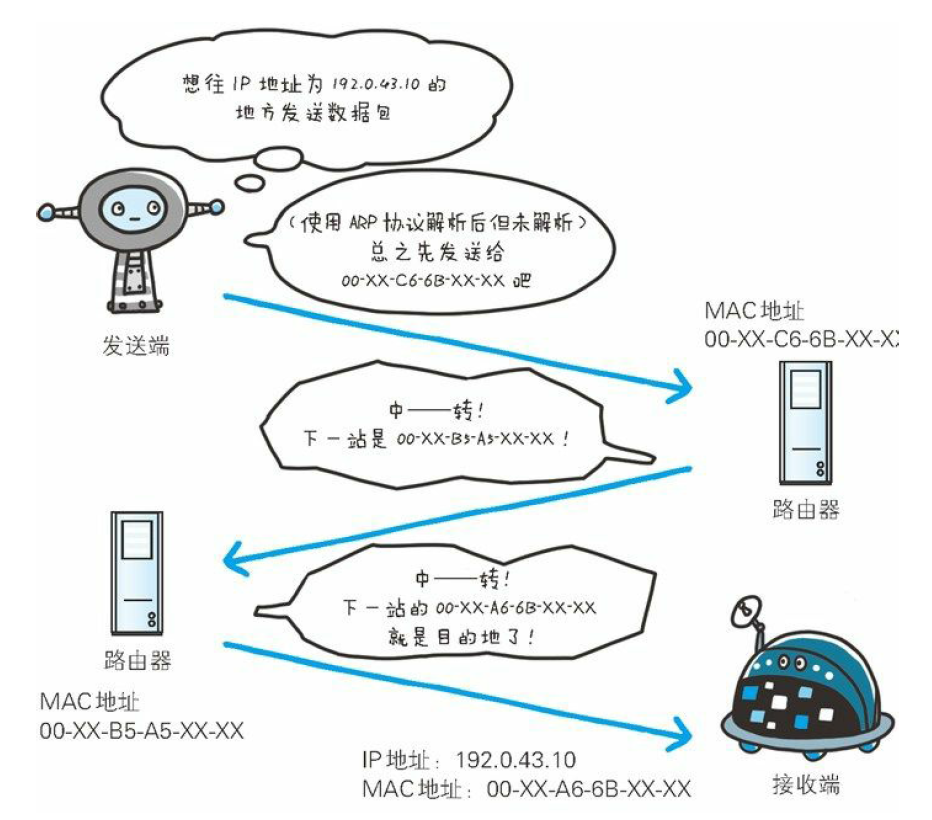

从输入URL到页面渲染完成
从输入URL到页面渲染完成
推荐阅读《图解HTTP》
各种协议与HTTP协议的关系(参照该图理解下文)
1. 输入URL地址
2. 浏览器根据域名查询IP地址
从要访问的域名中获取IP地址，DNS查询的步骤如下：
- 从浏览器缓存中查询。浏览器会存储一定时间的DNS记录，操作系统不会告诉浏览器每个DNS记录的保存时限，不同浏览器设置保存时限为一个固定值（不同浏览器情况不同，一般在2-30分钟）。
- 从操作系统缓存中查询。如果浏览器中没有包含想要的缓存记录，那浏览器就会发起操作系统请求，继续查询操作系统缓存
- 从路由器中查询DNS缓存。请求持续发送到你的路由，它通常会有自己的DNS缓存。
- 从ISP中查询DNS缓存。下一个被查询地方是ISP缓存DNS的服务器。
- 域名服务器递归查询。首先从root域名服务器中查询如.com域名服务器，然后逐步向前查询，.com顶级域名服务器到Facebook的域名服务器。一般来说，.com级别的都已经在缓存中了，所以一般不会进行对root域名服务器的查询。下面给出一张递归查询的图。
扩展
什么是DNS？
DNS（Domain Name System，域名系统），因特网上作为域名和IP地址相互映射的一个分布式数据库，能够使用户更方便的访问互联网，而不用去记住能够被机器直接读取的IP数串。通过主机名，最终得到该主机名对应的IP地址的过程叫做域名解析（或主机名解析）。
DNS查询的两种方式：递归查询和迭代查询
1、递归解析
当局部DNS服务器自己不能回答客户机的DNS查询时，它就需要向其他DNS服务器进行查询。
此时有两种方式，如图所示的是递归方式。
局部DNS服务器自己负责向其他DNS服务器进行查询，一般是先向该域名的根域服务器查询，再由根域名服务器一级级向下查询。
最后得到的查询结果返回给局部DNS服务器，再由局部DNS服务器返回给客户端。
2、迭代解析
当局部DNS服务器自己不能回答客户机的DNS查询时，也可以通过迭代查询的方式进行解析，如图所示。
局部DNS服务器不是自己向其他DNS服务器进行查询，而是把能解析该域名的其他DNS服务器的IP地址返回给客户端DNS程序，客户端DNS程序再继续向这些DNS服务器进行查询，直到得到查询结果为止。
也就是说，迭代解析只是帮你找到相关的服务器而已，而不会帮你去查。
比如说：baidu.com的服务器ip地址在192.168.4.5这里，你自己去查吧，本人比较忙，只能帮你到这里了。
DNS域名称空间的组织方式
我们在前面有说到根DNS服务器，域DNS服务器，这些都是DNS域名称空间的组织方式。
按其功能命名空间中用来描述 DNS 域名称的五个类别的介绍详见下表中，以及与每个名称类型的示例:
3. 浏览器发送HTTP请求到web服务器
向 http://facebook.com/ 发出GET请求
HTTP请求报文
在请求中，HTTP报文首部由方法、URI、HTTP版本、HTTP首部字段等构成。
确保可靠性的TCP协议
扩展
TCP三次握手
第一次握手：
客户端A将标志位SYN置为1,随机产生一个值为seq=J（J的取值范围为=1234567）的数据包到服务器，客户端A进入SYN_SENT状态，等待服务端B确认；第二次握手：
服务端B收到数据包后由标志位SYN=1知道客户端A请求建立连接，服务端B将标志位SYN和ACK都置为1，ack=J+1，随机产生一个值seq=K，并将该数据包发送给客户端A以确认连接请求，服务端B进入SYN_RCVD状态。第三次握手：
客户端A收到确认后，检查ack是否为J+1，ACK是否为1，如果正确则将标志位ACK置为1，ack=K+1，并将该数据包发送给服务端B，服务端B检查ack是否为K+1，ACK是否为1，如果正确则连接建立成功，客户端A和服务端B进入ESTABLISHED状态，完成三次握手，随后客户端A与服务端B之间可以开始传输数据了。
为什需要三次握手？
《计算机网络》第四版中讲“三次握手”的目的是“为了防止已失效的连接请求报文段突然又传送到了服务端，因而产生错误”
书中的例子是这样的，“已失效的连接请求报文段”的产生在这样一种情况下：client发出的第一个连接请求报文段并没有丢失，而是在某个网络结点长时间的滞留了，以致延误到连接释放以后的某个时间才到达server。
本来这是一个早已失效的报文段。但server收到此失效的连接请求报文段后，就误认为是client再次发出的一个新的连接请求。于是就向client发出确认报文段，同意建立连接。
假设不采用“三次握手”，那么只要server发出确认，新的连接就建立了。由于现在client并没有发出建立连接的请求，因此不会理睬server的确认，也不会向server发送数据。但server却以为新的运输连接已经建立，并一直等待client发来数据。这样，server的很多资源就白白浪费掉了。采用“三次握手”的办法可以防止上述现象发生。
例如刚才那种情况，client不会向server的确认发出确认。server由于收不到确认，就知道client并没有要求建立连接。”。主要目的防止server端一直等待，浪费资源。
TCP四次挥手
第一次挥手：
Client发送一个FIN，用来关闭Client到Server的数据传送，Client进入FIN_WAIT_1状态。第二次挥手：
Server收到FIN后，发送一个ACK给Client，确认序号为收到序号+1（与SYN相同，一个FIN占用一个序号），Server进入CLOSE_WAIT状态。第三次挥手：
Server发送一个FIN，用来关闭Server到Client的数据传送，Server进入LAST_ACK状态。第四次挥手：
Client收到FIN后，Client进入TIME_WAIT状态，接着发送一个ACK给Server，确认序号为收到序号+1，Server进入CLOSED状态，完成四次挥手。
为什么建立连接是三次握手，而关闭连接却是四次挥手呢？
这是因为服务端在LISTEN状态下，收到建立连接请求的SYN报文后，把ACK和SYN放在一个报文里发送给客户端。
而关闭连接时，当收到对方的FIN报文时，仅仅表示对方不再发送数据了但是还能接收数据，己方也未必全部数据都发送给对方了，所以己方可以立即close，也可以发送一些数据给对方后，再发送FIN报文给对方来表示同意现在关闭连接，因此，己方ACK和FIN一般都会分开发送。
什么是反向代理？
客户端本来可以直接通过HTTP协议访问某网站应用服务器，网站管理员可以在中间加上一个Nginx，客户端请求Nginx，Nginx请求应用服务器，然后将结果返回给客户端，此时Nginx就是反向代理服务器。
负责传输的IP协议
- IP间的通信依赖MAC地址
- ARP协议：(Address Resolution Protocol)用以解析地址的协议，根据通信方的IP地址就可以反查出对应的MAC地址

4. Facebook服务器返回一个永久重定向响应
服务器会发送一个301永久重定向响应来告诉浏览器访问 http://www.facebook.com/ 而不是 http://facebook.com/。
为什么服务器坚持重定向而不是直接给予浏览器用户需要的结果，这有很多有意思原因:
- 一个原因是搜索引擎排名，如果有两个URLs指向同一个页面，比如
http://www.igoro.com/和http://igoro.com/,搜索引擎会认为这是两个不同的网站，结果他们两个每个都有一部分访问量，但是也只能拥有更低的搜索引擎排名。如果使用了301定位，搜索引擎将会识别重定向，进而将同一来源的多个链接算作一个。 - 另一个原因是，同样的内容多个URLs还不利于缓存，同样的内容拥有多个名字，潜在造成缓存浪费。
扩展
301和302的区别：
301和302状态码都表示重定向，就是说浏览器在拿到服务器返回的这个状态码后会自动跳转到一个新的URL地址，这个地址可以从响应的Location首部中获取（用户看到的效果就是他输入的地址A瞬间变成了另一个地址B）——这是它们的共同点。
他们的不同在于。301表示旧地址A的资源已经被永久地移除了（这个资源不可访问了），搜索引擎在抓取新内容的同时也将旧的网址换为重定向之后的网址；
302表示旧地址A的资源还在（仍然可以访问），这个重定向只是临时地从旧地址A跳转到地址B，搜索引擎会抓取新的内容而保存旧的网址。 SEO 302好于301
重定向原因：
- 网站调整（如改变网页目录结构）；
- 网页被移到一个新地址；
- 网页扩展名改变(如应用需要把.php改成.Html或.shtml)。
这种情况下，如果不做重定向，则用户收藏夹或搜索引擎数据库中旧地址只能让访问客户得到一个404页面错误信息，访问流量白白丧失；再者某些注册了多个域名的网站，也需要通过重定向让访问这些域名的用户自动跳转到主站点等。
什么时候进行301或者302跳转呢？
当一个网站或者网页24—48小时内临时移动到一个新的位置，这时候就要进行302跳转，而使用301跳转的场景就是之前的网站因为某种原因需要移除掉，然后要到新的地址访问，是永久性的。
清晰明确而言：使用301跳转的大概场景如下：
1、 域名到期不想续费（或者发现了更适合网站的域名），想换个域名。
2、 在搜索引擎的搜索结果中出现了不带www的域名，而带www的域名却没有收录，这个时候可以用301重定向来告诉搜索引擎我们目标的域名是哪一个。
3、 空间服务器不稳定，换空间的时候。
5. 浏览器会跟踪重定向地址
浏览器知道了 http://www.facebook.com/ 是真正应该访问的URL，所以就发送了另外一个GET请求。
6. 服务器处理请求
服务器会接收这个GET请求，并且返回一个响应结果
怎么存储数据是每个动态网站都会面临的有趣难题
小网站会经常有一个SQL数据库来存储他们的数据，但是网站存储数据量过大或者流量过大后就必须将数据库分布在多台机器，解决的方法有很多种
包括sharding(在主键基础上划分表到多个数据库中)，复制和使用简化的弱语义一致性数据库
推迟一些任务到批处理作业是廉价保持数据更新的的一种技术。
例如，Facebook必须尽快更新新闻供应，但数据支持的“你可能认识的人”功能可能只需要每晚进行更新（作者猜测是这样）。批处理作业的更新导致存在一些旧的相对不重要的数据，但是使数据更新更快更简单。
7.服务器返回一个HTML响应
1 | HTTP/1.1 200 OK |
整个完整的响应是36KB，其中大部分处理后由blob类型传送
内容编码头部告诉浏览器响应体使用了gzip压缩算法。在解析blob后，你就会看到你期望的HTML了。
8. 浏览器开始渲染HTML
在浏览器接收完整HTML文件前，浏览器就开始渲染页面了。
9. 浏览器发送嵌入在HTML中的对象的请求
随着浏览器渲染HTML，浏览器会注意到有些标签需要请求其他URLs的资源，浏览器将会发送一个GET请求来重新获取每个文件 。
10. 浏览器发送异步请求
在web2.0时代，即使在页面渲染后客户端还是持续与服务器端通信。
例如，当你的朋友上线或下线时，Facebook聊天功能将会持续更新你已经登录的朋友列表。为了更新这个列表，你浏览器上运行的JS将会发送异步请求到服务器，异步请求是发送给特殊URL的GET或POST请求。在Facebook的例子中，客户端会发送一个POST请求到 http://www.facebook.com/ajax/chat/buddy_list.php ，获取你在线的朋友列表
这个模式被称为AJAX，是“Asynchronous JavaScript And XML”,的缩写，虽然不太清楚为什么服务器必须将响应格式化为xml。